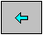
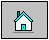
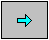

|  | Introducción |
relacion: RelacionApp.java
Los operadores relacionales son símbolos que se usan para comparar dos valores. Si el resultado de la comparación es correcto la expresión considerada es verdadera, en caso contrario es falsa. Por ejemplo, 8>4 (ocho mayor que cuatro) es verdadera, se representa por el valor true del tipo básico boolean, en cambio, 8<4 (ocho menor que cuatro) es falsa, false. En la primera columna de la tabla, se dan los símbolos de los operadores relacionales, el la segunda, el nombre de dichos operadores, y a continuación su significado mediante un ejemplo.
| Operador | nombre | ejemplo | significado |
| < | menor que | a<b | a es menor que b |
| > | mayor que | a>b | a es mayor que b |
| == | igual a | a==b | a es igual a b |
| != | no igual a | a!=b | a no es igual a b |
| <= | menor que o igual a | a<=5 | a es menor que o igual a b |
| >= | mayor que o igual a | a>=b | a es menor que o igual a b |
Se debe tener especial cuidado en no confundir el operador asignación con el operador relacional igual a. Las asignaciones se realizan con el símbolo =, las comparaciones con ==.
En el programa RelacionApp, se compara la variable i que guarda un 8, con un conjunto de valores, el resultado de la comparación es verdadero (true), o falso (false).
public class RelacionApp {
public static void main(String[] args) {
int x=8;
int y=5;
boolean compara=(x<y);
System.out.println("x<y es "+compara);
compara=(x>y);
System.out.println("x>y es "+compara);
compara=(x==y);
System.out.println("x==y es "+compara);
compara=(x!=y);
System.out.println("x!=y es "+compara);
compara=(x<=y);
System.out.println("x<=y es "+compara);
compara=(x>=y);
System.out.println("x>=y es "+compara);
}
}
|
Los operadores lógicos son:
AND y OR trabajan con dos operandos y retornan un valor lógico basadas en las denominadas tablas de verdad. El operador NOT actúa sobre un operando. Estas tablas de verdad son conocidas y usadas en el contexto de la vida diaria, por ejemplo: "si hace sol Y tengo tiempo, iré a la playa", "si NO hace sol, me quedaré en casa", "si llueve O hace viento, iré al cine". Las tablas de verdad de los operadores AND, OR y NOT se muestran en las tablas siguientes
El operador lógico AND
| x | y | resultado |
| true | true | true |
| true | false | false |
| false | true | false |
| false | false | false |
El operador lógico OR
| x | y | resultado |
| true | true | true |
| true | false | true |
| false | true | true |
| false | false | false |
El operador lógico NOT
| x | resultado |
| true | false |
| false | true |
Los operadores AND y OR combinan expresiones relacionales cuyo resultado viene dado por la última columna de sus tablas de verdad. Por ejemplo:
(a<b) && (b<c)
es verdadero (true), si ambas son verdaderas. Si alguna o ambas son falsas el resultado es falso (false). En cambio, la expresión
(a<b) ||(b<c)
es verdadera si una de las dos comparaciones lo es. Si ambas, son falsas, el resultado es falso.
La expresión " NO a es menor que b"
!(a<b)
es falsa si (a<b) es verdadero, y es verdadera si la comparación es falsa. Por tanto, el operador NOT actuando sobre (a<b) es equivalente a
(a>=b)
La expresión "NO a es igual a b"
!(a==b)
es verdadera si a es distinto de b, y es falsa si a es igual a b. Esta expresión es equivalente a
(a!=b)